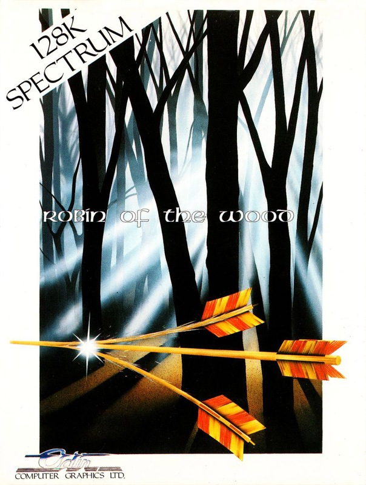
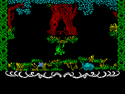
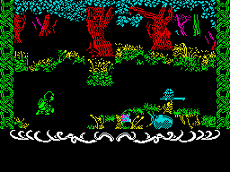
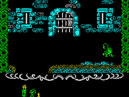
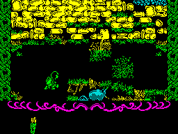

Robin of the Wood


{kind=link}

| Publisher: | Odin Computer Graphics |
| Price: | £9.95 |
| Year: | 1985 |
| Source: | CRASH, Issue 24 |

From a time outside history, before the language of the English was ever written down, there come to us stories and legends of heroes and valiant folk. One such story tells of Robin, son of Aleric, keeper of the Arrow. This silver arrow was a symbol of freedom and peace to the Saxon nation and it came into the Sheriff of Nottingham’s possession after he arranged for Aleric’s death. The arrow meant nothing to the Sheriff, and the years passed as the Normans continued to rob and exploit the Saxons.

in by two nasty Normans, Robin is about
to be banished to the castle dungeons
by the nasty Sheriff who’s just appeared.
Robin’s collected three flowers, a quiver
full of arrows and two extra lives. So
he shouldn’t have too much trouble escaping
from the dungeon
Many years later, Aleric’s son, Robin, became a thorn in the Sheriff’s side. He had grown up and become the hero of the Saxon race, creating havoc by robbing the rich and giving to the poor. Realising the value of the Silver Arrow to the Saxons, the Sheriff announced that it would be the prize in an archery contest. Knowing that Robin would not be able to resist the challenge, the Sheriff sent his Norman knights out into the wood to hunt for Robin.
It is the day of the archery contest and you play the part of Robin. It is your mission to recover the arrow, The Shaft of Power, for the Saxon nation. Before making your way to the Sheriff’s castle to enter the contest, you must first complete several other tasks in the forest. The old wise Ent (remember them from Lord of the Rings?) has in his keeping your bow, your sword and three magical arrows. In order to get these you must give the Ent three bags of gold for each weapon. The gold is in the possession of the Evil Bishop of Peterborough, who has an escort of crossbow-wielding Normans: some nifty fighting is needed before he can be robbed.

after having just done a Norman
to death — the little blue helmet’s
all that’s left...
There are three areas in the game: the forest, the castle dungeons and the castle itself. The forest is a maze of leafy glades and tree-lined pathways through which the animated figure of Robin runs. Objects, including extra lives, flowers and arrows are scattered round the forest floor. All Robin has to do to pick them is move over them and squat down. Apart from the marauding Norman soldiers who have orders to shoot on sight, and do their best to inflict wounds, there are other characters in the wood who will help or hinder you. While travelling to the castle you will encounter witches, who materialise from time to time. A witch will send you to the castle dungeon unless she’s given the right amount of flowers. On the other hand, if a witch is given flowers, she may help by transporting Robin to another location. A visit to the hermit doctor will pay dividends if you have been injured — but he isn’t too nice, if you’re carrying weapons.
Boars run loose in the forest, and contact with a tusked terror leads to injuries. Occasionally you cross the path of the Sheriff of Nottingham, who has you imprisoned in his dungeons if he spots you. It is possible to escape from the dungeons, but not without a key!
Once you have got all the weapons and got into the castle you are able to enter the tournament and have a chance of winning the arrow. The three magical arrows purchased from the Ent will safeguard you against being recognised by the Sheriff, but once you have fired the last magic arrow you will be spotted, and must escape before getting caught.

ungeon close in on Robin
Throughout the game your status is displayed at the bottom of the screen, together with the objects carried. Robin’s health is represented by a pair of antlers which change colour according to his energy level. Naturally, if Robin’s wounds become too severe, he dies, and care must be taken as you only have one life at the start of the game.
Just below the antlers the objects carried and extra lives obtained are displayed. Robin begins the game with a quarterstaff, which is perfectly adequate for despatching the Normans, but will only work in hand to hand combat. Other weapons can be used against the foe, and will come into action as appropriate, once you have bought them from the Ent.
CRITICISM

the castle walls
‘Odin’s first release, Nodes of Yesod, was quite unexpected and proved to be an excellent game. Could they keep up the standards set by their previous and produce the goods in Robin of the Wood? Thankfully, the answer is yes! Graphically this game is excellent, and the attention to detail is evident throughout. The programmers are obviously perfectionists. The high standard of the graphics has not been at the expense of colour: there are few attribute problems. Some cynics may say that the game looks like a Sabre Wulf variant, but it is much more involved, and character interaction plays an important part in Robin of the Wood. The animation is very well done — just watch Robin use his bow or attack a Norman with his trusty sword! The game makes quite a fun beat em up! Robin of the Wood is definitely another hit from the Odin stable. I can’t wait for The Arc of Yesod.’
‘Everyone at CRASH Towers was eagerly awaiting Robin of the Wood. Then the finished copy arrived and was loaded up. ‘Wow! What colour’ I thought as Robin materialised on the screen. When everyone else had had their go, I finally got my hands on it. Robin’s a great little character in the way he plods around the forest. After a few plays I realized that there was more behind the forest than first meets the eye. And it’s a very colourful one — even with red and blue trees. You get a taste of the aggro to come when you go around hitting everyone in sight with your staff — which is great fun. After a while you get to hate witches. Every time I came across one I had no flowers and she nicked my money bags. The Bishop and other characters are fantastically animated and when you get into the castle the colour used is amazing. This game is one of the most addictive I’ve played and I would recommend it to anyone.’
‘Though first impressions lead you believe Robin of the Wood is yet another Sabre Wulf clone, upon closer inspection it soon becomes apparent that a lot more thought and ingenuity has gone into its creation. The graphics are impeccable, animationally superior to nearly every other release on the Spectrum. The statics are very good too, giving a really woody atmosphere with realistically drawn flora and fauna. I thought the red boars were great, scuffling realistically across the screen. This is certainly a great step forward for Odin — it’s even better than the excellent Nodes of Yesod.’
COMMENTS
| Control keys: | Definable |
| Joystick: | Kempston, Protek and Cursor types, Interface 2 |
| Keyboard play: | Very responsive |
| Use of colour: | Excellent variety, with few attribute problems |
| Graphics: | Beautifully done, detailed and well executed |
| Sound: | Some recognisable speech plus a nice tune at the start of the game |
| Skill levels: | 1 |
| Screens: | 330 |
| General rating: | An excellent game that should appeal to everyone |
| Use of computer: | 89% |
| Graphics: | 95% |
| Playability: | 96% |
| Getting started: | 88% |
| Addictive qualities: | 94% |
| Value for money: | 90% |
| Overall: | 94% |